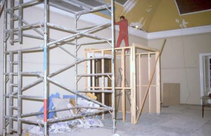

In 1907, the Borough Engineer submitted a scheme for adaption of the upper rooms of the north wing as a picture gallery. His initial estimate of the cost was £475. The committee put adequate lighting at the top of their requirements list. The Borough Engineer having inspected the lighting at the Whitworth Art Gallery in Manchester, suggested that top lighting of a similar scheme be adopted at Towneley. This together with using maple wood blocks, rather than boards, increased the original estimate to £600. Work was completed by March 31st 1908 and the first exhibition was opened on April 28th by Lord O'Hagan.
The Hon. Secretary's report for the year ending 31st March, 1908, highlighted the new Art Gallery - The provision of the Gallery is the most important event undertaken by the Committee since the acquisition by the Corporation of Towneley Hall. The Gallery is 90 feet long by 23 feet wide, and is lighted by top lights, and the paintings hung in the Gallery show wonderfully well.
It was named the New Gallery in the exhibition catalogue, distinguishing it from the Long Gallery. This name remained in all the exhibition catalogues up until 1923 when the Edward Stocks Massey Gallery was opened and it became simply the Art Gallery.
Changes in subsequent years included installation of air conditioning in the art galleries in 1973 along with electric lighting throughout the building and the construction of the Art Gallery vestibule in 1996.
